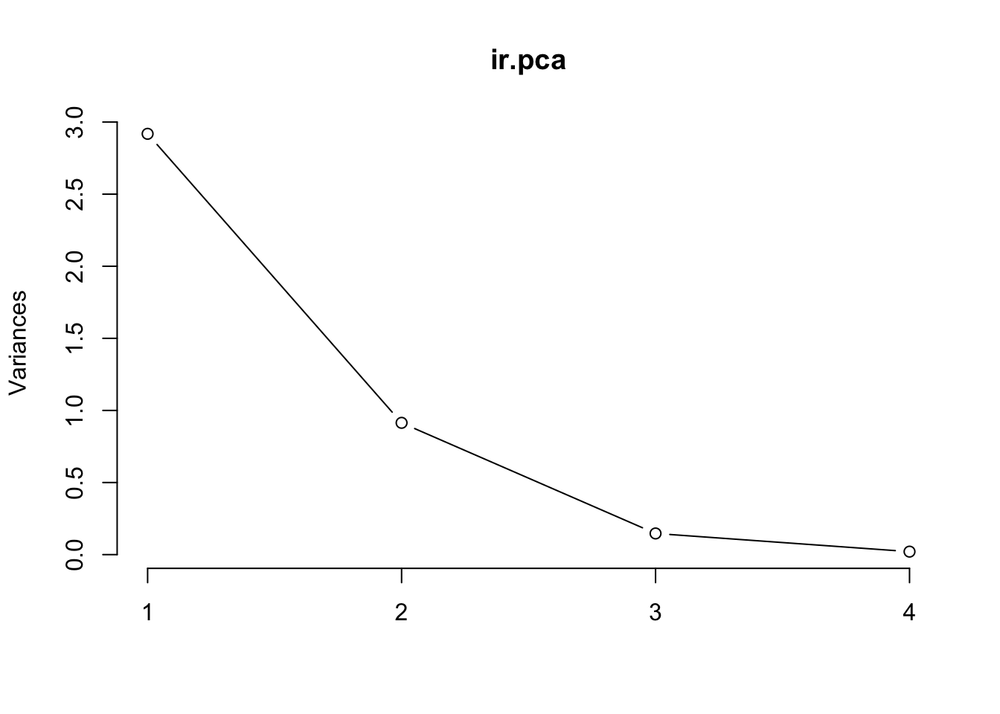
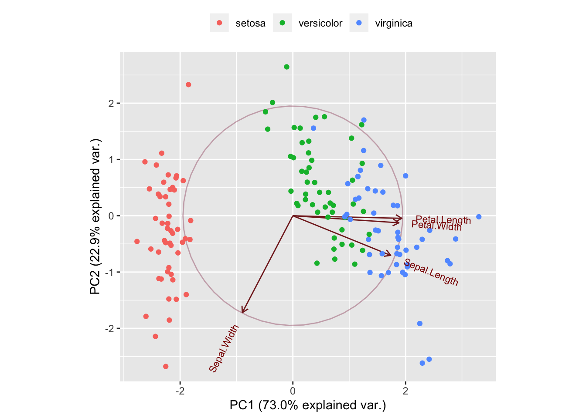

Chapter 8 Advanced Explorations
8.1 PCA
Here are the irises again.
ir.pca <- prcomp(iris[, -5],
center = TRUE,
scale. = TRUE)
print(ir.pca)## Standard deviations (1, .., p=4):
## [1] 1.708 0.956 0.383 0.144
##
## Rotation (n x k) = (4 x 4):
## PC1 PC2 PC3 PC4
## Sepal.Length 0.521 -0.3774 0.720 0.261
## Sepal.Width -0.269 -0.9233 -0.244 -0.124
## Petal.Length 0.580 -0.0245 -0.142 -0.801
## Petal.Width 0.565 -0.0669 -0.634 0.5248.2 Plot variances
The plot method returns a plot of the variances (y-axis) associated with the PCs (x-axis).
plot(ir.pca, type = "l")
8.3 Summary
The summary method describe the importance of the PCs.
summary(ir.pca)## Importance of components:
## PC1 PC2 PC3 PC4
## Standard deviation 1.71 0.956 0.3831 0.14393
## Proportion of Variance 0.73 0.229 0.0367 0.00518
## Cumulative Proportion 0.73 0.958 0.9948 1.000008.4 The PC plot
print(g)
8.5 Clustering
- Using clustering, you can sometimes see obvious patterns in the data.
- Most obvious are:
- k-Means clustering
- Hierarchical clsutering
8.6 k-Means clustering
k-means is very sensitive to the scale of your data so you’ll need to normalize it.
8.7 k-Means clustering
#km_clusters <- kmeans()